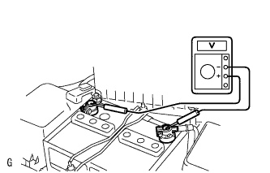
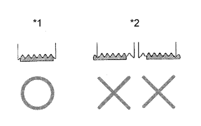
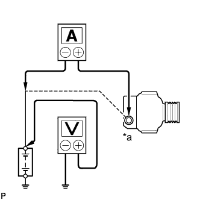

СИСТЕМА ЗАРЯДКИ АККУМУЛЯТОРНОЙ БАТАРЕИ > ПРОВЕРКА БЕЗ СНЯТИЯ С АВТОМОБИЛЯ |
| 1. ПРОВЕРЬТЕ СОСТОЯНИЕ АККУМУЛЯТОРНОЙ БАТАРЕИ |
Убедитесь, что аккумуляторная батарея не повреждена и не деформирована. В случае наличия серьезных повреждений, деформации или утечки воды замените аккумуляторную батарею.
Проверьте количество электролита в каждом элементе батареи.
|  |
Проверьте напряжение аккумуляторной батареи.
Выключите зажигание и включите фары на 20–30 с. Это процедура позволит удалить поверхностный заряд с аккумуляторной батареи.
Измерьте напряжение в соответствии со значениями, приведенными в таблице.
| Контакты для подключения диагностического прибора | Состояние | Заданные условия |
| Положительный (+) вывод - отрицательный (-) вывод | 20°C (68°F) | 12,5 - 12,9 В |
| 2. ПРОВЕРЬТЕ ВЫВОДЫ АККУМУЛЯТОРНОЙ БАТЕРЕИ И ПЛАВКИЙ ПРЕДОХРАНИТЕЛЬ |
Убедитесь, что выводы аккумуляторной батареи надежно закреплены и не покрыты окисной пленкой.
Измерьте сопротивление высокоамперных и прочих предохранителей.
| 3. ПРОВЕРЬТЕ ПРИВОДНОЙ РЕМЕНЬ |
 |
Убедитесь в отсутствии износа, трещин и других признаков повреждения.
При обнаружении следующих дефектов замените вентилятор и поликлиновой ремень генератора.
|  |
Убедитесь в том, что приводной ремень правильно располагается в углублениях шкива.
| *1 | ПРАВИЛЬНО |
| *2 | НЕПРАВИЛЬНО |
| 4. ОСМОТРИТЕ ПРОВОДКУ ГЕНЕРАТОРА |
Убедитесь, что проводка исправна.
В случае повреждения проводки отремонтируйте или замените провод генератора.
| 5. ПРОВЕРЬТЕ ГЕНЕРАТОР НА НАЛИЧИЕ НЕНОРМАЛЬНОГО ШУМА |
Проверьте, не издает ли генератор ненормальный шум при работающем двигателе.
При наличии ненормального шума замените шкив или генератор.
| 6. ПРОВЕРЬТЕ ЦЕПЬ КОНТРОЛЬНОЙ ЛАМПЫ ЗАРЯДА |
Включите зажигание (IG). Убедитесь, что загорелась контрольная лампа заряда.
Включите двигатель и убедитесь, что контрольная лампа погасла.
| 7. ПРОВЕРЬТЕ ЦЕПЬ ЗАРЯДКИ БЕЗ НАГРУЗКИ |
|  |
Подсоедините вольтметр и амперметр к зарядной цепи следующим образом.
Отсоедините провод от вывода B генератора и подключите его к отрицательному выводу (-) амперметра.
| *a | Отсоедините провод от контакта B |
Соедините положительный вывод (+) амперметра с выводом B генератора.
Подсоедините положительный (+) провод вольтметра к положительному (+) выводу аккумуляторной батареи.
Отрицательный подводящий провод (-) вольтметра подключите к массе.
Проверьте цепь зарядки.
Поддерживайте частоту вращения коленчатого вала двигателя на уровне 2000 об/мин. Проверьте показание амперметра и вольтметра.
| 8. ПРОВЕРЬТЕ ЦЕПЬ ЗАРЯДКИ С НАГРУЗКОЙ |
Поддерживая частоту двигателя на уровне 2000 об/мин, включите фары дальнего света и установите переключатель нагнетателя отопителя в положение "HI".
Проверьте показание амперметра.